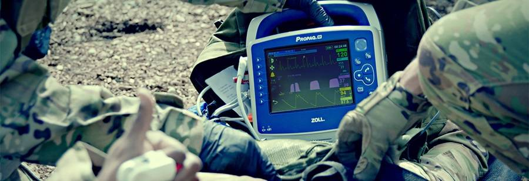

تجهیزات پزشکی تنفسی foras
شرکت افرا طب نماینده انحصاری تجهیزات پزشکی تنفسی CPAPو BIPAP انواع ماسک NIV لوله های رابط برند FORAS ترکیه با تکنولوژی داخلی آمریکا

الکتروشوک zoll
واردات مستقیم انواع دستگاه الکتروشوک برند zoll امریکا در مدل های ZOLL M Series و ZOLL AED PLUS فول ریفربیش واقعی آماده استفاده با قیمت فوق العاده مناسب